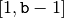
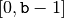

2.3. The cryptarithmetic puzzle problem and a first model
Now that your system is up and running (if not, see Getting started), let us solve a cryptarithmetic puzzle with the help of the or-tools library.
In this section, we describe the problem and propose a first model to solve it. This model is by no means efficient but allows us a gentle introduction to the library.
2.3.1. Description of the problem
A cryptarithmetic puzzle is a mathematical game where the digits of some numbers are represented by letters (or symbols). Each letter represents a unique digit. The goal is to find the digits such that a given mathematical equation is verified[1].
Here is an example:
C P
+ I S
+ F U N
---------
= T R U E
One solution is C=2 P=3 I=7 S=4 F=9 U=6 N=8 T=1 R=0 E=5 because
2 3
+ 7 4
+ 9 6 8
---------
= 1 0 6 5
Ideally, a good cryptarithmetic puzzle must have only one solution[2]. We derogate from this tradition. The above example has multiple solutions. We use it to show you how to collect all solutions of a problem.
2.3.2. How to solve the problem?
We follow the classical The three-stage method.
2.3.2.1. Describe
The first stage is to describe the problem, preferably in natural language. What is the goal of the puzzle? To replace letters by digits such that the sum CP+IS+FUN=TRUE is verified.
What are the unknowns (decision variables)? The digits that the letters represent. In other words, for each letter we have one decision variable that can take any digit as value.
What are the constraints? The obvious constraint is the sum that has to be verified. But there are other - implicit - constraints. First, two different letters represent two different digits. This implies that all the variables must have different values in a feasible solution. Second, it is implicit that the first digit of a number can not be 0. Letters C, I, F and T can thus not represent 0. Third, there are 10 letters, so we need at least 10 different digits. The traditional decimal base is sufficient but let’s be more general and allow for a bigger base. We will use a constant kBase. The fact that we need at least 10 digits is not really a CP constraint. After all, the base is not a variable but a given integer that is chosen once and for all for the whole program[3].
2.3.2.2. Model
For each letter, we have a decision variable (we keep the same letters to name the variables). Given a base b, digits range from 0 to b-1. Remember that variables corresponding to C, I, F and T should be different from 0. Thus C, I, F and T have  as domain and P, S, U, N, R and E have  as domain. Another possibility is to keep the same domain for all variables and force C, I, F and T to be different from 0 by adding inequalities. However, restraining the domain to is more efficient.
To model the sum constraint in any base b, we add the linear equation:
![\begin{center}
\begin{tabular}{cccccccc}
& & & & + & ${\color{blue}{\mathtt{C}}} \cdot b$ & + & ${\color{blue}{\mathtt{P}}}$\\
& & & & + & ${\color{blue}{\mathtt{I}}} \cdot b$ & + & ${\color{blue}{\mathtt{S}}}$\\
& & + & ${\color{blue}{\mathtt{F}}} \cdot b^2$ & + & ${\color{blue}{\mathtt{U}}} \cdot b$ & + & ${\color{blue}{\mathtt{N}}}$\BStrut\\
\hline
= & ${\color{blue}{\mathtt{T}}} \cdot b^3$ & + & ${\color{blue}{\mathtt{R}}} \cdot b^2$ & + & ${\color{blue}{\mathtt{U}}} \cdot b$ & + & ${\color{blue}{\mathtt{E}}}\TStrut$
\end{tabular}
\end{center}](../../_images/math/0d9f85ba90d8b2b497781f983ddd845cec6a2df2.png)
The global constraint AllDifferent springs to mind to model that variables must all have different values:
AllDifferent(C,P,I,S,F,U,N,T,R,E)
What is the AllDifferent[4] constraint?
The AllDifferent constraint enforces a set of variables to take distinct values. For instance, the solution C=2 P=3 I=7 S=4 F=9 U=6 N=8 T=1 R=0 E=5 for our cryptarithmetic puzzle satisfies the AllDifferent constraint as all the values taken are pairwise different. There exist a variety of propagation algorithms for this constraint. The one used in or-tools is bound based (see [Lopez-Ortiz2003]).
2.3.2.3. Solve
At this stage of our discovery of the library, we will not try to find a good search strategy to solve this model. A default basic strategy will do for the moment.
Chapter Defining search primitives in constraint programming is entirely devoted to the subject of search strategies.
Footnotes
| [1] | This the mathematical term to specify that the equation is true. |
| [2] | Like the famous SEND + MORE = MONEY ... in base 10. |
| [3] | We could have chosen the base as a variable. For instance, to consider such a question as: “What are the bases for which this puzzle has less than x solutions?” |
| [4] | We talk here about the generic AllDifferent constraint. In or-tools, we use the method MakeAllDifferent(). |
Bibliography
| [Lopez-Ortiz2003] | Alejandro Lopez-Ortiz, Claude-Guy Quimper, John Tromp and Peter Van Beek. A fast and simple algorithm for bounds consistency of the all different constraint, Proceedings of the 18th international joint conference on Artificial intelligence, Acapulco, Mexico, pp 245-250, 2003, Morgan Kaufmann Publishers Inc. |
Google or-tools |
User's Manual
Google search
Welcome
Tutorial examples
Current chapter
2. First steps with or-tools: cryptarithmetic puzzles
Previous section
Next section
2.4. Anatomy of a basic C++ code